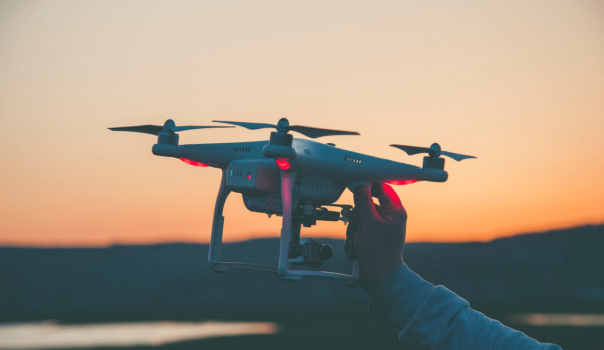
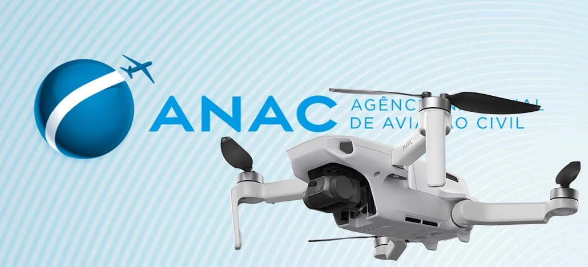
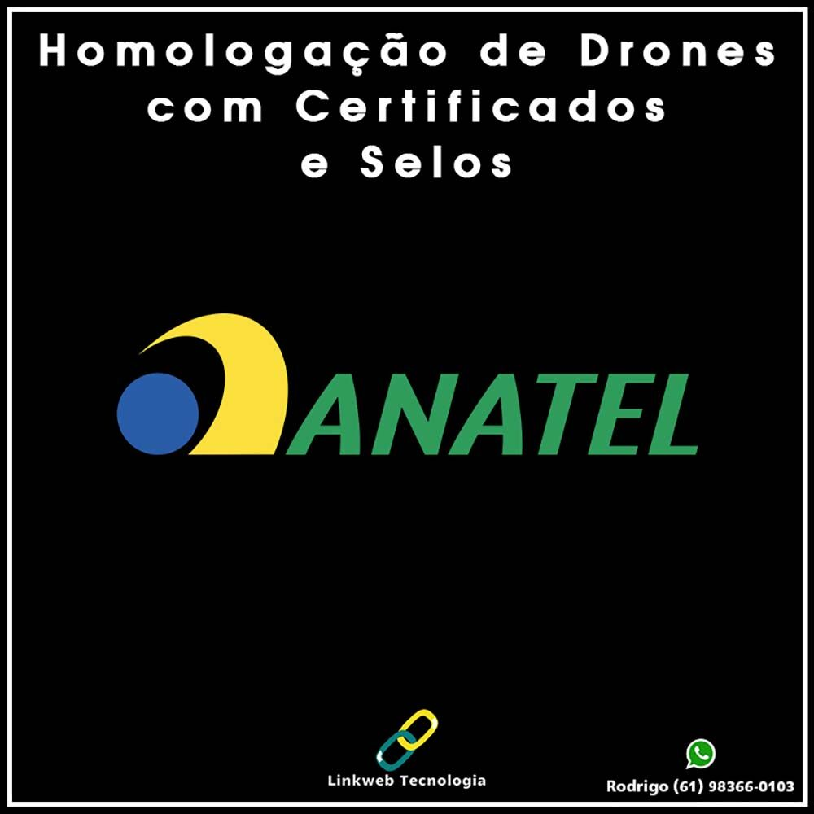
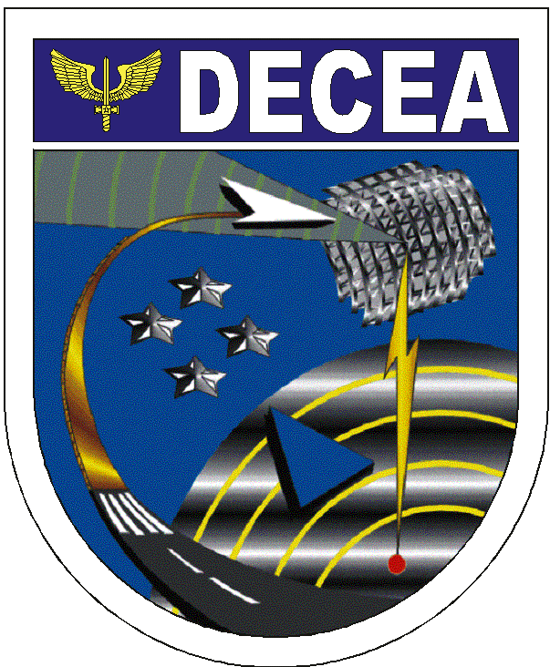

DRONES, COMO ELES FUNCIONAM ?
O que são drones e quais regras você precisa seguir para pilotar no Brasil
Entenda o que são drones e quais são as regras necessárias para seguir, se deseja pilotar esses equipamentos aqui no Brasil

Se fôssemos conversar com alguém no início dos anos 2000, seria difícil imaginar que teríamos aeronaves presentes no nosso cotidiano, fazendo entregas ou gravando eventos, mas hoje com a popularização de tecnologia os drones são uma realidade. Por isso, vamos entender o que são drones, como funcionam e o que é preciso fazer para pilotar esses aparelhos no Brasil.
O que são drones
Os drones são aeronaves não tripuladas de diversos tamanhos que inicialmente possuiam usos militares, mas que hoje em dia possuem uma variedade bem grande de utilizações, desde captação de imagens para eventos, transmissões de imagens para atividades jornalísticas, entrega de objetos para lojas e claro, diversão. No Brasil, os drones também podem ser chamados de VANTs, veículos aéreos não tripulados. Inicialmente, os drones tinham como objetivo proteger vidas de soldados, pois era menos arriscado enviar unidades não tripuladas em missões militares do que colocar a vida de soldados em risco. O uso militar dos drones começou a ser mais notado a partir dos anos 80, quando foram utilizados pela força aérea israelense contra a força aérea síria em 1982. Hoje os dispositivos controlados remotamente não são mais exclusividade do meio militar e chegaram a cenários mais populares, sendo bem comuns em jogos como Call of Duty e Battlefield, além de filmes e seriados.
Como os drones e tornaram populares

Conforme a tecnologia se popularizou e os preços dos dispositivos foram barateados, os drones acabaram se tornando mais populares e número de utilizações aumentou consideravelmente. Em alguns casos equipes de jornalismo que substituem seus helicópteros, por drones para gravação de imagens aéreas. O mesmo recurso também é utilizado por companhias que fazem transmissões de eventos esportivos e shows que utilizam drones para conseguirem imagens aéreas para compor transmissões mais dinâmicas. A indústria do entretenimento como a estúdios de TV e cinema também começaram a utilizar muitos drones, como uma alternativa mais simples e barata para produzir imagens aéreas.

O uso de drones precisa seguir um conjunto de regras, pois sobrevoar áreas onde existe uma grande concentração de pessoas pode ser perigoso, já que mesmo um drone pequeno pode ferir uma pessoa gravemente em caso de acidente. Outro fator importante é a definição do espaço aéreo que drones utilizam, pois esses aparelhos podem causar interferências em equipamentos de aeronaves, além disso, um drone deve respeitar os limites de altitude para voar, para não invadir rotas aéreas.
Regulamentação de drones no Brasil
Embora a regulamentação dos drones no Brasil seja algo recente, tendo em vista que se iniciou em 2017, foi algo necessário para definir padrões, leis e regras que envolvam o uso desses aparelhos, seja para atividades profissionais ou lazer. No Brasil a regulamentação dos drones é feita em conjunto através de três órgãos: ANAC, ANATEL e DECEA. Cada órgão é responsável por área que envolve a operação dos drones.
ANAC — Agência Nacional de Aviação Civil

A Agência Nacional de Aviação Civil definiu regras básicas para que a operação de drones possua mais segurança para pessoas e a proteção de bens. Uma das providências tomadas pela ANAC, foi dividir as aeronaves remotamente pilotadas para fins experimentais, comerciais ou institucionais em três categorias, baseadas no peso dos aparelhos. Por isso, se seu drone se enquadra em algumas das categorias abaixo, será necessário fazer um cadastro no SISANT(Sistema de aeronaves não tripuladas).
Classes de aeronaves remotamente pilotadas
- Classe 1: RPAs com peso máximo de decolagem maior que 150 kg;
- Classe 2: RPAs com peso máximo de decolagem maior que 25 kg e menor ou igual a 150 kg;
- Classe 3: RPAs com peso máximo de decolagem maior que 250 g e menor do que 25 kg;
Vale lembrar que drones ou RPAs com peso abaixo de 250 g, não precisam de cadastro junto à ANAC. Existe um conjunto de regras específicas para pilotar drones, citarei algumas aqui referentes aos drones de classe 3, que são os mais comuns, mas o conjunto completo está no site da ANAC.
Regras básicas para operação de drones classe 3
- Ser maior de 18 anos;
- Equipamentos com peso máximo de decolagem acima de 250g precisam ser cadastrados no SISANT;
- É obrigatória a contratação de seguro de responsabilidade civil, chamado de Seguro RETA;
- Altura máxima de voo é de 400 pés ou 120 m de altura. Acima desta altitude é necessário ter uma certificação de pilotagem específica;
- Distância mínima horizontal de 30 metros em relação a pessoas, casas, prédios, veículos e animais.
- Estar afastado pelo menos 5 km de distância de aeródromos;
ANATEL — Agência Nacional de Telecomunicações

A Agência Nacional de Telecomunicações iniciou o cadastro de equipamentos em 2017, ao solicitar que todos os usuários de drones realizassem a homologação dos aparelhos, pois tanto aeronave, quanto o controle utilizam frequências de rádio e podem causar interferência em outros dispositivos deaeronaves. Existem algumas etapas no processo de homologar um drone, mas elas estão informadas no site referente à homologação de produtos de telecomunicações na ANATEL.
DECEA — Departamento de Controle do Espaço Aéreo

O Departamento de Controle do Espaço Aéreo tem como objetivo principal regulamentar o espaço aéreo. Para realizar uma operação de voo é necessário solicitar uma autorização de voo junto ao DECEA, através do sistema Sarpas. Na solicitação o operador deve informar dados relacionados ao local do voo, aeronave utilizada, período, altura e outros dados básicos que o departamento utilizará para avaliar se é possível conceder a liberação do voo, de acordo com as regras vigentes.
Documentos necessários para operar um drone com fins profissionais
- Selo de homologação da Anatel, no rádio e no drone;
- Manual de voo do Drone;
- Documento de avaliação de Risco;
- Documento com a liberação de voo do DECEA;
- Apólice de seguro RETA;
Embora pilotar um drone pareça simples e divertido, é necessário cumprir uma série de exigências feitas pelos órgãos competentes, para que atividade seja feita de forma segura por todos os envolvidos.